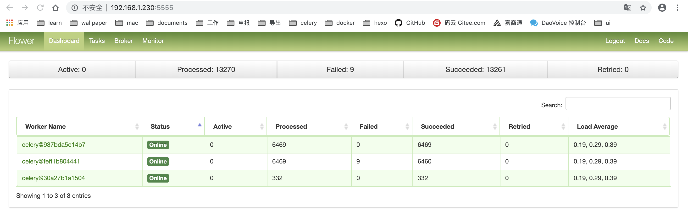
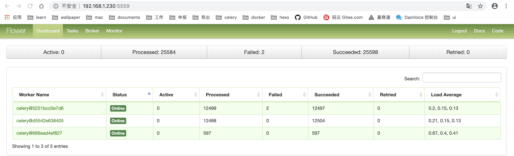

使用flower容器进行worker后台监控
使用容器，部署在192.168.1.230
监听本地worker的容器名称 yct_flower,内网访问地址 192.168.1.230:5555

监听阿里云worker的容器名称 aliyun01_flower,内网访问地址 192.168.1.230:5559

文件夹目录下只有三个有用文件1
2
3
4
5.
├── Dockerfile
├── README.md
├── docker-entrypoint.sh
└── requirements.txt
Dockerfile
1 | FROM python:3.7 |
docker-entrypoint.sh启动文件
1 |
|
requirements.txt
1 | celery==4.3.0rc1 |
启动命令
1 | docker run --env BROKER_HOST=47.102.218.137 --env BROKER_PORT=5672 --env VIRTUAL_HOST='yct' --name flower -p 5555:5555 -d [镜像名称] |
其中 BROKER_HOST 、BROKER_PORT 和 VIRTUAL_HOST 为环境变量
BROKER_HOST 、BROKER_PORT 指定消息队列地址和端口
VIRTUAL_HOST 指定消息队列的的 vhost名称
镜像地址（此处是我自己的镜像地址，后面可以自己打包）
daocloud.io/huhuhuhu/flower_docker:latest
当监控下的任务太多时，重启flower容器，将前面的任务记录清空1
docker restart yct_flower